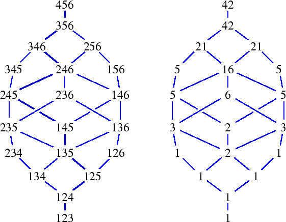

Next: 4.ii.c. Proof of Theorem 4.4
Up: 4.ii The Special Schubert Calculus
Previous: 4.ii.a. Geometry of Grassmann Varieties
4.ii.b The Degrees of Schubert Varieties
An intersection of two varieties X and Y is generically
transverse if X and Y meet
transversally along an open subset of every component of
their intersection.
When a and b are in Cn,k
and satisfy a < b
but there is no index c in Cn,k with
a < c < b, then we say that b covers a.
The following fact is elementary and due to Schubert.
Theorem 4.5
Let
a in
Cn,k and set
Ha to be the hyperplane defined
by
pa=0.
Then the intersection of
Ha with
Xa is generically transverse and equals the union of
the Schubert varieties
Xb for all
b in
Cn,k that are covered by
a.
In fact this intersection is transverse along each Schubert cell
Xbo, which is the difference of
Xb and all of its Schubert subvarieties.
We obtain the recursion for the degree d(a)
of the Schubert variety Xa
| d(a) = |
 |
d(b) , |
|
(4.8) |
the sum over all b in Cn,k that are
covered by a.
Since the minimal Schubert variety is a point (which has degree 1), this gives
a conceptual formula for d(a).
Let 0=(1,2,...,k) be the minimal element in the Bruhat order.
|
d(a) = The number of saturated chains in the
Bruhat order Cn,k from 0 to a .
|
(4.9) |
Figure 11 displays both the
Bruhat order for k=3 and n=6 (on the left) and the degrees of the
corresponding Schubert varieties (on the right).
|  |
| Figure 11:
Bruhat order and degrees of Schubert varieties, k=3 and n=6 |
Next: 4.ii.c. Proof of Theorem 4.4
Up: 4.ii The Special Schubert Calculus
Previous: 4.ii.a. Geometry of Grassmann Varieties